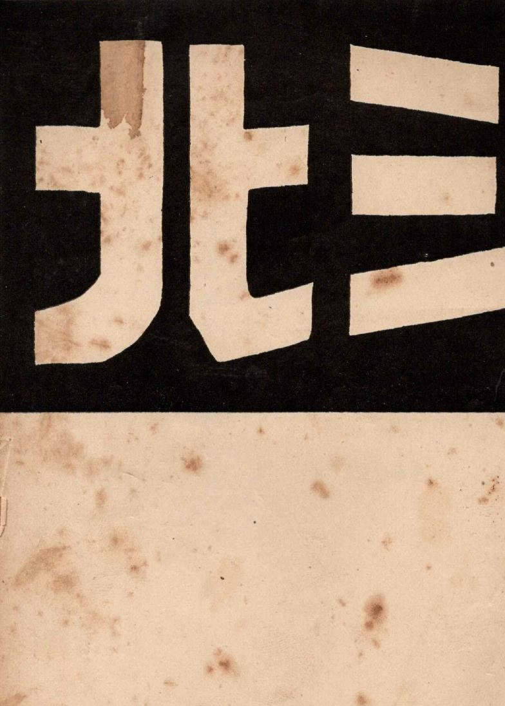
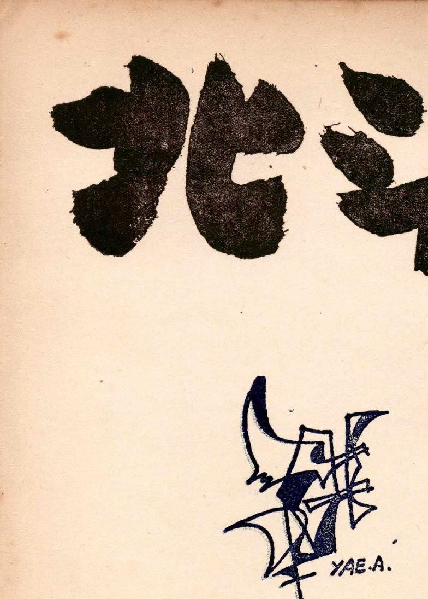
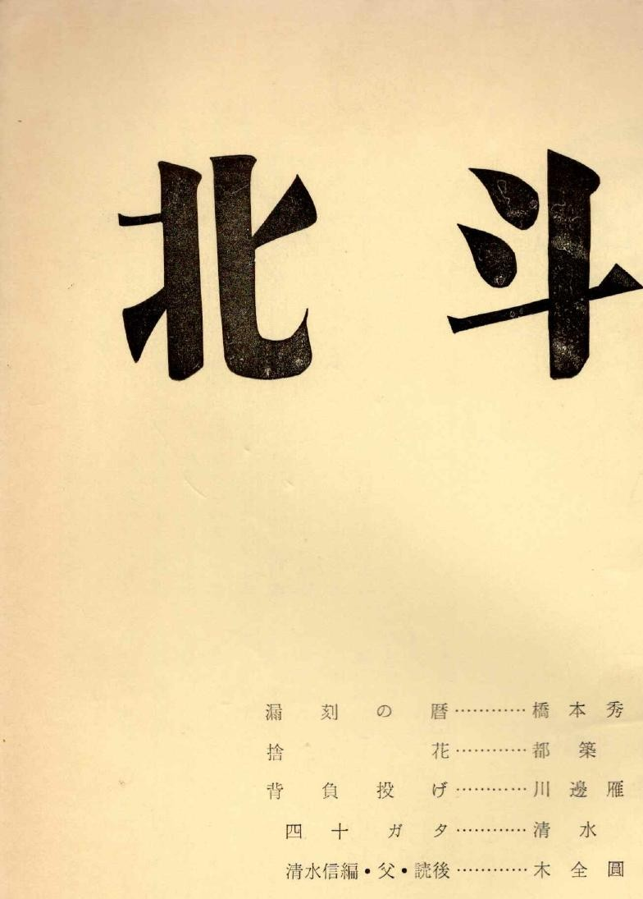

北斗について
概要
1949（昭和24）年創刊の小説を主体とする月刊文芸同人雑誌として、同人と会員で自主・自律的に運営する。 同人は単行本も発表して受賞も多い。同人雑誌界を牽引して次世代となる若者を積極的に育成する。
野口富士夫、小田切秀雄、平野謙、花田清輝らと交流し、大江健三郎、鎌田慧らも読者である。
掲載するカットは浅野弥衛画伯。
沿革
| 1949（昭和24）年 |
作家木全圓壽、清水信、井澤純、川島學により創刊。続いて浅野弥衛（現代抽象画家・愛知県立芸術大学講師）、羽柴和夫（中日新聞整理部長）、野村智（名古屋タイムズ理事）らが参加。 木全邸に活版印刷機を設置し、同人たちが活字を拾い印刷して雑誌作成。   |
| 1961（昭和36）年 | 第3種郵便物認可取得。 |
| 1962（昭和37）年 |
清水信「第2回近代文学賞」受賞。
 |
| 1994（平成6）年 | 木全圓壽死去。福岡早苗第2代主宰。 |
| 1999（平成11）年 | 福岡早苗死去。吉田栄治第3代主宰就任と同時に病臥。 |
| 2001（平成13）年 | 吉田栄治死去。竹中忍第4代主宰。 |
| 2003（平成15）年 | 500号刊行。 |
発行情報
- 誌 名
- 北斗（ほくと）
- 発行頻度
- 月刊（毎月1日発行）
- 頒 価
- 1冊 500円
- 編集発行人
- 竹中 忍
- 発 行 所
- 北斗工房 〒451-0013 名古屋市西区江向町2-38
- 印 刷
- ㈱プリテックコーポレーション
- 事 務 局
- 寺田 繁 〒466-0827 名古屋市昭和区川名山町1-87-5
参加・投稿のご案内
北斗では、同人・会員を随時募集しています。小説・エッセイ・詩・短歌・評論など、ジャンルを問わず作品をお寄せいただけます。
ご参加・投稿に関するお問い合わせは、お問い合わせページまたは事務局（寺田）までご連絡ください。